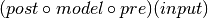

satlas.transformmodel.TransformHFSModel¶
-
class
satlas.transformmodel.TransformHFSModel(*args, **kwargs)[source]¶ Create an HFSModel that applies both a pre-processing transformation on the input data and a post-processing transformation on the output data. Mathematically:

Both transformations are initialized to the identical transformation for one input argument.
-
__init__(*args, **kwargs)[source]¶ Passes all arguments on the
HFSModel. SeeHFSModelfor input information.
Methods
__init__(*args, **kwargs)Passes all arguments on the HFSModel.plot(*args, **kwargs)Grants access to the HFSModel.plotmethod, passing all arguments.Attributes
pre_transformThe transformation function to be applied to the input data. post_transformThe transformation function to be applied to the output data. -